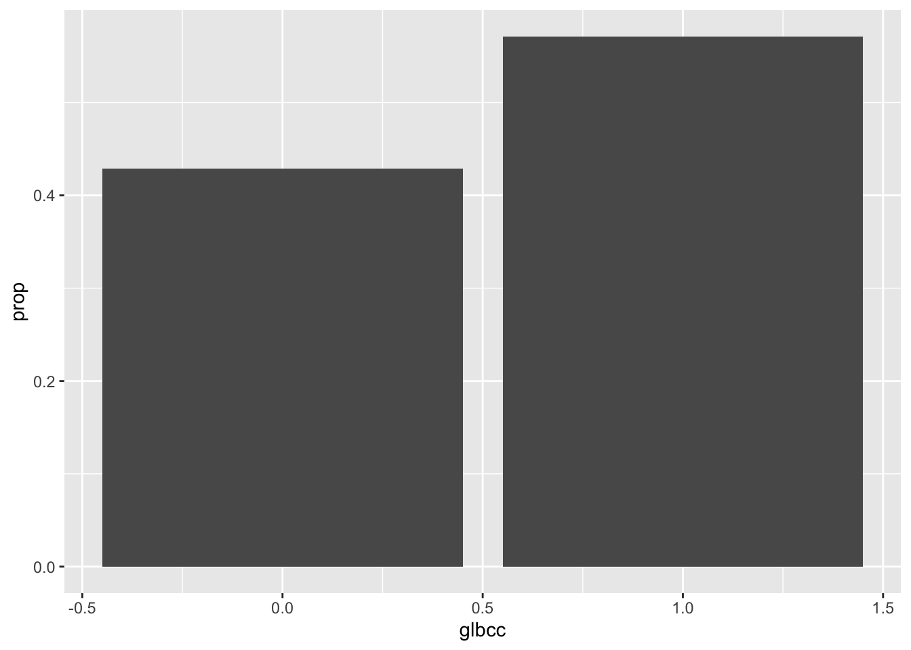
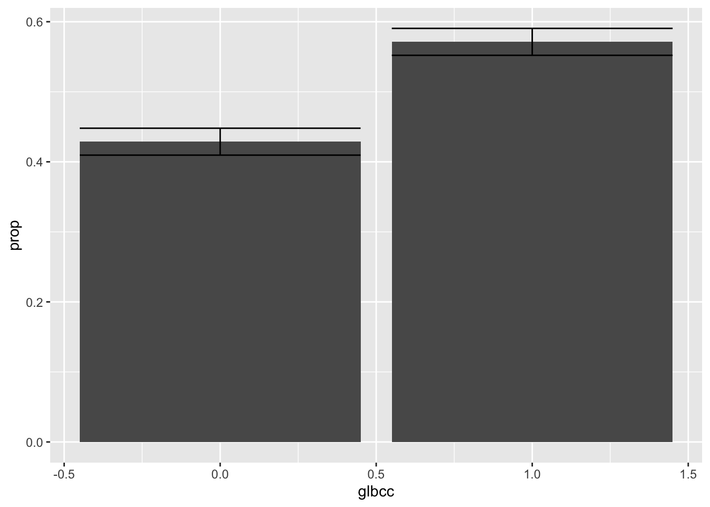
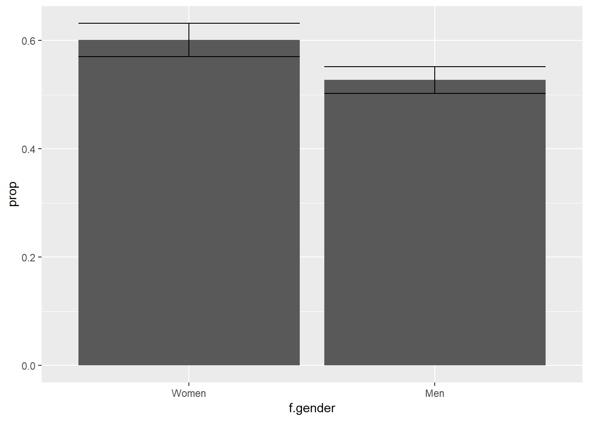
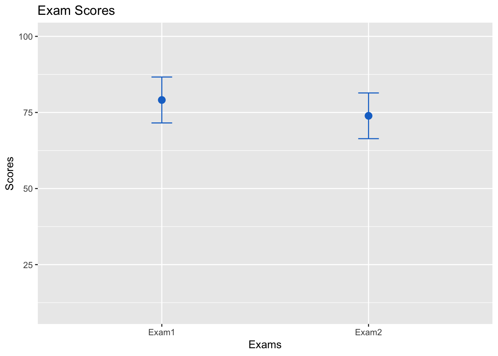
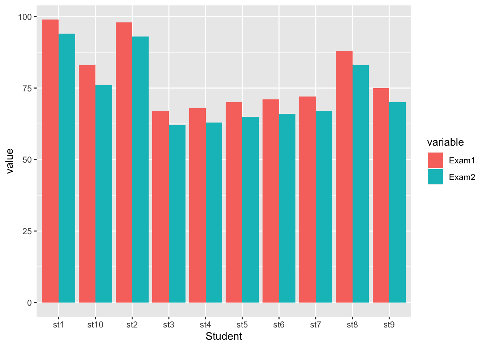

6 Inference for Two Populations
This lab covers the basics of inference for two populations. We go through proportions and cross tabulations; the different types of two sample t-tests; difference in one and two tailed tests; and how to plot means and the differences between means. The following packages are required for this lab:
- tidyverse
- psych
- car
- vcd
- reshape2
- skimr
6.1 Proportions
To start with proportions, We will use the glbcc variable from the class dataset that contains respondents’ opinions on global climate change. Specifically, it asks if they believe that greenhouse gases cause global temperatures to increase. We start with describing the data. A zero indicates “no” and 1 indicates “yes.”
ds %>%
count(glbcc)## # A tibble: 2 x 2
## glbcc n
## <int> <int>
## 1 0 1092
## 2 1 1455Now we can describe the population proportions.
ds %>%
count(glbcc) %>%
mutate(prop = n / sum(n))## # A tibble: 2 x 3
## glbcc n prop
## <int> <int> <dbl>
## 1 0 1092 0.429
## 2 1 1455 0.571The above table describes the proportions of the population that believe humans cause climate change. Let’s visualize the proportions.
Data frames are required for ggplot visualizations. Sometimes you have to construct the data frame manually, using the data.frame() function and creating vectors inside it with c(). However, when working with tidyverse functions, there are often shortcuts. Below we are able to visualize the proportion table by simply piping it directly to ggplot2 and putting a . in place of the data set.
ds %>%
count(glbcc) %>%
mutate(prop = n / sum(n)) %>%
ggplot(., aes(glbcc, prop)) +
geom_bar(stat = "identity")
As we learned in the last lab, there are uncertainties associated to point estimates. We can include confidence intervals to get a range of values for which we are confident (at some level) the value actually falls between. To calculate confidence intervals we need to find the standard error of the proportionn and assign it to an object that we will name se.gcc.
se.gcc <-sqrt((0.5713 * (1 - 0.5713)/2547))
se.gcc## [1] 0.009806056Alternatively, we can use the describe() function to avoid rounding errors:
se.gcc <- describe(ds$glbcc)$se
se.gcc## [1] 0.009808095With the standard error object, we can calculate the confidence intervals. Here we will calculate the following: the upper bounds and lower bounds for the yes and no confidence intervals.
\[CI=\hat{p} \pm z\frac{s}{\sqrt{n}},\]
Where \(\hat{p}\) is the sample proportion. Recall that 95% confidence corresponds to a 1.96 z-score.
The proportion table from earlier provides the values we will use:
ds %>%
count(glbcc) %>%
mutate(prop = n / sum(n))## # A tibble: 2 x 3
## glbcc n prop
## <int> <int> <dbl>
## 1 0 1092 0.429
## 2 1 1455 0.571First store the standard error as an object:
se.gcc <- se.gcc <- describe(ds$glbcc)$seRecall that the mutate() verb can be used to create multiple variables at once. With this in mind, we can easily create a data frame that contains the measurements of interest, the standard error, and the lower and upper bounds of the confidence interval. For a 95% confidence interval, you take the proportion, plus or minus 1.96 mulipltied by the standard error. Inside the mutate() function create three new variables: the standard error, lower, and upper:
new.ds <- ds %>%
count(glbcc) %>%
mutate(prop = n / sum(n),
se.gcc = se.gcc,
lower = prop - 1.96 * se.gcc,
upper = prop + 1.96 * se.gcc)
new.ds## # A tibble: 2 x 6
## glbcc n prop se.gcc lower upper
## <int> <int> <dbl> <dbl> <dbl> <dbl>
## 1 0 1092 0.429 0.00981 0.410 0.448
## 2 1 1455 0.571 0.00981 0.552 0.590With the new data frame we can create a visualization that includes the confidence intervals. The code is similar to the previous ggplot2 code used, but now with the addition of the geom_errorbar() function. The geom_errorbar() function requires arguments to use the lower and upper bound values for the confidence intervals:
ggplot(new.ds, aes(x = glbcc, y = prop)) +
geom_bar(stat = "identity") +
geom_errorbar(aes(ymin = lower, ymax = upper))
6.1.1 Two Populations
Research is often interested in differences between distinct populations. Using the glbcc variable, we will review responses differentiated by gender, using the group_by() function.
ds %>%
group_by(f.gender) %>%
count(glbcc) %>%
drop_na() %>%
mutate(prop = n / sum(n)) ## # A tibble: 4 x 4
## # Groups: f.gender [2]
## f.gender glbcc n prop
## <fct> <int> <int> <dbl>
## 1 Women 0 606 0.399
## 2 Women 1 914 0.601
## 3 Men 0 485 0.473
## 4 Men 1 541 0.527To visually examine which gender has, on average, higher belief that greenshouse gases cause climate change, plotting the two mean levels of belief for the genders is a good place to start. To create a visualization, the mean level of glbcc needs to be found for each gender. In this case, the proportion of each gender believing in climate change is the same as the “mean” amount of men or women believing in climate change. The following code returns a new data frame that is just like the previous one, but filters the data to include only responses indicate a belief that greenhouse gases cause climage change.
ds %>%
group_by(f.gender) %>%
count(glbcc) %>%
drop_na() %>%
mutate(prop = n / sum(n)) %>%
filter(glbcc == 1)## # A tibble: 2 x 4
## # Groups: f.gender [2]
## f.gender glbcc n prop
## <fct> <int> <int> <dbl>
## 1 Women 1 914 0.601
## 2 Men 1 541 0.527Similarly to earlier in the lab, confidence intervals can also be calculated by finding the standard error. In this case, we need to find the standard error for men and women separately. We will use the filter() function to simplify the calculations:
male <- filter(ds, gender==1)
female <- filter(ds, gender==0)
m.se <- describe(male$glbcc)$se
f.se <- describe(female$glbcc)$seNow that we have the standard errors for men and women, we can return to the previous data frame we constucted and add a column for the standard error. This is done using the tidyverse verb add_column(). Assign the new data frame to a new object, then print the data frame:
df2 <- ds %>%
group_by(f.gender) %>%
count(glbcc) %>%
drop_na() %>%
mutate(prop = n / sum(n)) %>%
filter(glbcc == 1) %>%
add_column(se = c(m.se, f.se))Now construct the visualization. Like the previous visualization, use geom_errorbar() to construct the confidence intervals. However, this time you will need to calculate them inside the geom_errorbar() function itself!
ggplot(df2, aes(f.gender, prop)) +
geom_bar(stat = "identity") +
geom_errorbar(aes(ymin = prop - 1.96 * se,
ymax = prop + 1.96 * se))
Suppose we wondered whether women believe humans cause climate change more than men: this visualization provides only a partial answer. By the “eye test,” the visualization appears to show that women have a higher value than men, and furthermore the confidence intervals do not overlap; however, the eye test alone is insufficient. An empirical test is required.
To start, we formulate the following hypotheses:
\(H_0\): there is no difference between genders
\(H_1\): there is a difference between genders
We can use a two sample t-test to test these hypotheses. Using the different data sets created earlier for genders and the glbcc variable we will find the 95% confidence interval, p-value, and point estimate.
t.test(male$glbcc, female$glbcc)##
## Welch Two Sample t-test
##
## data: male$glbcc and female$glbcc
## t = -3.6966, df = 2170.3, p-value = 0.0002239
## alternative hypothesis: true difference in means is not equal to 0
## 95 percent confidence interval:
## -0.11329550 -0.03475519
## sample estimates:
## mean of x mean of y
## 0.5272904 0.6013158The t-test yields a p-value < \(\alpha\) = 0.05, thereby the null hypothesis is rejected to conclude there is a statistical significance in responses by gender. Further, the point estimate calculated as 0.074 informs us 7% more women than men believe humans cause climate change. Note: The confidence interval tells us that, with 95% confidence, the difference between women and men is between 3% and 11%. Judgment is required to determine whether gender difference is substantive.
6.2 Cross Tabulations
Another way to examine the difference of gender and beliefs about climate change is cross tabulation. Cross tabulations describe relationships between two variables. The basic building block of cross tabulations are tables, a skill acquired in previous labs.
For this section, we will use the glbcc_risk variable, that measures the level of risk respondents associate with climate change (on a scale of zero to ten). The range associated to this scale is simplified to zero to five using the recode() function:
ds$r.gccrsk <- car::recode(ds$glbcc_risk, "0:1=1; 2:3=2; 4:6=3; 7:8:=4; 9:10=5")
table(ds$r.gccrsk)##
## 1 2 3 4 5
## 268 331 761 538 638Next the variable is separated by gender using the table() function. The dependent variable, r.gccrsk, is specified followed by the independent variable, f.gender:
gcc.table <- table(ds$r.gccrsk, ds$f.gender)
gcc.table##
## Women Men
## 1 134 134
## 2 175 155
## 3 480 281
## 4 330 208
## 5 393 245The prop.table() function describes the relationship by proportions. We convert the proportion to percentage of each response level by gender by including margin=2.
gcc.table %>% prop.table(margin = 2) * 100##
## Women Men
## 1 8.862434 13.098729
## 2 11.574074 15.151515
## 3 31.746032 27.468231
## 4 21.825397 20.332356
## 5 25.992063 23.949169There appears to be a difference in genders; however, as these differences are within a sample we cannot infer there is a difference in the population without an empirical test. We will use the Chi-Square test to empirically test whether there is a statistically significant difference in genders. The chisq.test() function performs the Chi-Square test given on a table:
chisq.test(gcc.table)##
## Pearson's Chi-squared test
##
## data: gcc.table
## X-squared = 21.729, df = 4, p-value = 0.0002269Note: The summary() function will provide additional information about this table, independent of a Chi-Square test.
summary(gcc.table)## Number of cases in table: 2535
## Number of factors: 2
## Test for independence of all factors:
## Chisq = 21.729, df = 4, p-value = 0.0002269Given the Chi-Square test p-value < \(\alpha\) = 0.05, the null hypothesis is rejected such that there is a statistically significant difference between gender and perceived risk of climate change. Substantive difference is as important as statistical significance, and a variety of methods exist to test the strength of relationships. For the Chi-Square test, finding Cramer’s Vs is the appropriate method. The assocstats() function will return a variety of coefficients and numbers, including Cramer’s V.
assocstats(gcc.table)## X^2 df P(> X^2)
## Likelihood Ratio 21.494 4 0.00025270
## Pearson 21.729 4 0.00022695
##
## Phi-Coefficient : NA
## Contingency Coeff.: 0.092
## Cramer's V : 0.093Cramer’s V is a score ranging from 0 to 1, whereby 0 indicates a weak association and 1 indicates strong association. The Cramer’s V score returned for the previous test is quite small, indicating a weak association.
Perhaps we are interested in gender as a control variable, with ideology as the independent variable. A new table for perceived risk of climate change, ideology (conservative, moderate, liberal), and gender is as follows:
gcc.table2 <- table(ds$r.gccrsk, ds$f.ideology, ds$f.gender)
gcc.table2## , , = Women
##
##
## Conservative Liberal Moderate
## 1 108 4 20
## 2 119 5 50
## 3 216 20 237
## 4 84 60 185
## 5 42 166 180
##
## , , = Men
##
##
## Conservative Liberal Moderate
## 1 115 1 17
## 2 120 0 34
## 3 151 10 118
## 4 57 33 116
## 5 24 99 121Again, a Chi-Square test and Cramer’s V will provide insight. To separate the genders, [,,1] is used for male and [,,2] is used for female.
For male:
chisq.test(gcc.table2[,,1])##
## Pearson's Chi-squared test
##
## data: gcc.table2[, , 1]
## X-squared = 485.92, df = 8, p-value < 0.00000000000000022assocstats(gcc.table2[,,1])## X^2 df P(> X^2)
## Likelihood Ratio 496.17 8 0
## Pearson 485.92 8 0
##
## Phi-Coefficient : NA
## Contingency Coeff.: 0.495
## Cramer's V : 0.403For female:
chisq.test(gcc.table2[,,2])##
## Pearson's Chi-squared test
##
## data: gcc.table2[, , 2]
## X-squared = 409.29, df = 8, p-value < 0.00000000000000022assocstats(gcc.table2[,,2])## X^2 df P(> X^2)
## Likelihood Ratio 440.55 8 0
## Pearson 409.29 8 0
##
## Phi-Coefficient : NA
## Contingency Coeff.: 0.536
## Cramer's V : 0.449Both chi-square tests return significant results, and both Cramer’s V scores are about .4. The interpretation of this Cramer’s V score is clearly stronger than the previous score; however, the score itself is not judged as a strong association.
6.2.1 Other Coefficients
There are other coefficient scores that are appropriate to use in certain situations. The Phi coefficient is used with a 2x2 contingency table. The contingency coefficient, C, is used for square tables. Keep these different methods in mind when doing cross-tabulations and chi-square tests.
6.3 Independent t-tests
This section elaborates on t-tests. So far we have emphasized t-tests, as the Student’s t distribution can be used when n < 30, and when \(\sigma\) is unknown. The rule of thumb is to use Student’s t distribution in these two instances, and the normal distributions for all other cases; however, the Student’s t distribution begins to approximate the normal distribution with high n sizes, so t-tests are applicable in most instances.
When using t-tests for two populations, you need to first decide if you should use an independent t-test or a paired t-test. An independent t-test is used when the two groups are independent from each other. A paired t-test is used for paired or connected groups. For the class data set the independent t-tests is appropriate. For an independent t-test, the variance between groups must be unequal.
Let’s examine if there is a difference between the risk associated with climate change for Democrats and Republicans in our survey. In order to test only Democrats and Republicans, we need to recode our factored party variable to only include Democrats and Republicans:
ds$f.part <- car::recode(ds$f.party.2, "'Dem'='Dem'; 'Rep'='Rep'; else=NA")
ds %>%
count(f.part) %>%
drop_na()## # A tibble: 2 x 2
## f.part n
## <fct> <int>
## 1 Dem 869
## 2 Rep 1185We need to compare variances for Democrats and Republicans on their risk perception of climate change. First use skim() to take a look at some summary statistics by political party.
ds %>%
group_by(f.part) %>%
skim(glbcc_risk) ## Skim summary statistics
## n obs: 2547
## n variables: 216
## group variables: f.part
##
## ── Variable type:integer ──────────────────────────
## f.part variable missing complete n mean sd p0 p25 p50 p75 p100
## Dem glbcc_risk 4 865 869 7.71 2.43 0 6 8 10 10
## Rep glbcc_risk 5 1180 1185 4.53 2.77 0 2 5 7 10
## <NA> glbcc_risk 2 491 493 6.25 3.07 0 5 7 9 10
## hist
## ▁▁▁▃▁▂▂▇
## ▅▂▃▇▂▂▂▂
## ▃▂▂▅▂▃▃▇The Levene test is used to test if the difference in variances is statistically significant. Similar to previously discussed hypotheses, the Levene tests the following hypotheses:
-\(H_0\): variances are equal
-\(H_1\): variances are not equal
leveneTest(ds$glbcc_risk, ds$f.part)## Levene's Test for Homogeneity of Variance (center = median)
## Df F value Pr(>F)
## group 1 18.852 0.00001481 ***
## 2043
## ---
## Signif. codes: 0 '***' 0.001 '**' 0.01 '*' 0.05 '.' 0.1 ' ' 1Given the p-value < \(\alpha\) = 0.05, we reject the null hypothesis such that there is a statistically significant difference in variances. With this result we can perform an independent t-test for two populations. The framework for forming hypotheses is as follows:
-\(H_0\): the two populations are indifferent; “there is no difference in perceived risk of climate change between Democrats and Republicans” -\(H_1\): the two populations are different; “there is a difference in perceived risk of climate change between Democrats and Republicans”
t.test(ds$glbcc_risk ~ ds$f.part, var.equal = FALSE) # var.equal=FALSE is default##
## Welch Two Sample t-test
##
## data: ds$glbcc_risk by ds$f.part
## t = 27.556, df = 1977.2, p-value < 0.00000000000000022
## alternative hypothesis: true difference in means is not equal to 0
## 95 percent confidence interval:
## 2.957765 3.411041
## sample estimates:
## mean in group Dem mean in group Rep
## 7.709827 4.525424Given the p-value < \(\alpha\) = 0.05, we reject the null hypothesis such that there is a statistically significant difference in perceived risk of climate change between democrats and republicans.
The previous test is an example of a two-tailed test, which lacks directionality (greater than, less than). In contrast, a one-tailed t-test tests hypotheses that include direction. To perform a one-tailed t-test, we include the command alt=“greater” inside the t.test() function:
t.test(ds$glbcc_risk ~ ds$f.part, alt="greater")##
## Welch Two Sample t-test
##
## data: ds$glbcc_risk by ds$f.part
## t = 27.556, df = 1977.2, p-value < 0.00000000000000022
## alternative hypothesis: true difference in means is greater than 0
## 95 percent confidence interval:
## 2.994229 Inf
## sample estimates:
## mean in group Dem mean in group Rep
## 7.709827 4.5254246.3.1 Other Independent Sample Tests
Not all research leads to testing two populations. For example, consider whether a difference exists in perceived risk of climate change among Democrats, Republicans, and independents. Further, if there are statistically significant differences, how could ideologies be ranked? Unfortunately, performing pairwise t-tests on the possible combinations is inadequate, due to the “family-wise error rate” associated to the p-value. The pairwise.t.test() function employs the family-wise correction method (by default, Holm-Bonferroni method) to correct the p-value.
Like traditional independent sample tests involving two samples, the variances must be unequal:
leveneTest(ds$glbcc_risk ~ ds$f.party.2)## Levene's Test for Homogeneity of Variance (center = median)
## Df F value Pr(>F)
## group 2 13.683 0.000001234 ***
## 2396
## ---
## Signif. codes: 0 '***' 0.001 '**' 0.01 '*' 0.05 '.' 0.1 ' ' 1Given that the p-value < \(\alpha\) = 0.05, we reject the null hypothesis such that there is a difference in variances. The pairwise.t.test() function can perform the pairwise test, using the f.party_2 variable that was factored for Democrats, Republicans, and independents:
pairwise.t.test(ds$glbcc_risk, ds$f.party.2, pool.sd=FALSE)##
## Pairwise comparisons using t tests with non-pooled SD
##
## data: ds$glbcc_risk and ds$f.party.2
##
## Dem Ind
## Ind 0.0000000000013 -
## Rep < 0.0000000000000002 < 0.0000000000000002
##
## P value adjustment method: holmThe output of the pairwise.t.test() function is read as a table, whereby each value is associated to the pairwise comparison.
An alternative, multiple comparisons test, is the Tukey Honest Significance Difference test (“Tukey’s test”), that is commonly used with Analysis of Variance (ANOVA). In short, Tukey’s test is used to find means that are significantly difference between multiple samples. Tukey’s test requires using the aov() function to perform ANOVA, as follows:
aov(ds$glbcc_risk ~ ds$f.party.2) %>% TukeyHSD()## Tukey multiple comparisons of means
## 95% family-wise confidence level
##
## Fit: aov(formula = ds$glbcc_risk ~ ds$f.party.2)
##
## $`ds$f.party.2`
## diff lwr upr p adj
## Ind-Dem -1.294572 -1.691945 -0.8971998 0
## Rep-Dem -3.184403 -3.466308 -2.9024976 0
## Rep-Ind -1.889831 -2.271490 -1.5081713 0The p-value < \(\alpha\) = 0.05 between each pair.
6.4 Paired t-test
Paired t-tests are appropriate for data that are not independent. Consider the need to compare data from the same population for different points in time, such as semester exams for the same students in a class.
The teacher wants to examine if there is a difference in the students’ performances between exams one and two. The following hypothetical data frame could represent the students and their performance:
Student <- c("st1", "st2", "st3", "st4", "st5", "st6", "st7", "st8", "st9", "st10")
Exam1 <- c(99, 98, 67, 68, 70, 71, 72, 88, 75, 83)
Exam2 <- c(94, 93, 62, 63, 65, 66, 67, 83, 70, 76)
exam.ds <- data.frame(Student, Exam1, Exam2)
exam.ds## Student Exam1 Exam2
## 1 st1 99 94
## 2 st2 98 93
## 3 st3 67 62
## 4 st4 68 63
## 5 st5 70 65
## 6 st6 71 66
## 7 st7 72 67
## 8 st8 88 83
## 9 st9 75 70
## 10 st10 83 76The exam.ds data frame consists of three vectors: the student, exam one, and exam two.
First check the variance between the two groups:
var.test(exam.ds$Exam1, exam.ds$Exam2)##
## F test to compare two variances
##
## data: exam.ds$Exam1 and exam.ds$Exam2
## F = 1.0091, num df = 9, denom df = 9, p-value = 0.9895
## alternative hypothesis: true ratio of variances is not equal to 1
## 95 percent confidence interval:
## 0.2506424 4.0625692
## sample estimates:
## ratio of variances
## 1.009085Given the p-value > \(\alpha\) = 0.05, the null hypothesis is not rejected such that there is no statistically significant difference in variances.
Next, we define our hypotheses for the paired test:
-\(H_0\): there is no difference between exams one and two for students
-\(H_1\): there is a difference between exams one and two for students
t.test(exam.ds$Exam1, exam.ds$Exam2, paired = TRUE, var.equal = TRUE)##
## Paired t-test
##
## data: exam.ds$Exam1 and exam.ds$Exam2
## t = 26, df = 9, p-value = 0.0000000008884
## alternative hypothesis: true difference in means is not equal to 0
## 95 percent confidence interval:
## 4.747569 5.652431
## sample estimates:
## mean of the differences
## 5.2Given the p-value < \(\alpha\) = 0.05, the null hypothesis is rejected such that there is a statistically significant difference in means. Next, to determine directionality, the alt="greater" argument is included in the t.test() function. Additionally, the hypotheses are modified as follows: \(H_0\): there is no difference between exams one and two for students
\(H_1\): exams one performance is greater than exam two performance for students
t.test(exam.ds$Exam1, exam.ds$Exam2, paired = TRUE, var.equal = TRUE, alt = "greater")##
## Paired t-test
##
## data: exam.ds$Exam1 and exam.ds$Exam2
## t = 26, df = 9, p-value = 0.0000000004442
## alternative hypothesis: true difference in means is greater than 0
## 95 percent confidence interval:
## 4.833377 Inf
## sample estimates:
## mean of the differences
## 5.2Given the p-value < \(\alpha\) = 0.05, the null hypothesis is rejected.
6.5 Visualizing Differences in Means
Visualization of data is essential to interpreting and communicating difference in means. To demonstrate, we will use ggplot2 to visualize the difference in exam scores used with the paired t-tests.
First, we consider the difference of means with confidence intervals. We start by calculating the means for each exam:
exam1 <- mean(exam.ds$Exam1, na.rm = T)
exam2 <- mean(exam.ds$Exam2, na.rm = T)Then, the standard errors:
exam1.se <- describe(exam.ds$Exam1)$se
exam2.se <- describe(exam.ds$Exam2)$seLastly, the bounds for the confidence intervals. The 1.96 z-score is used for 95% confidence:
exam1up <- exam1 + exam1.se*1.96
exam1low <- exam1 - exam1.se*1.96
exam2up <- exam2 + exam2.se*1.96
exam2low <- exam2 - exam2.se*1.96Next, a data frame is constructed with the previous information in respective vectors:
test <- c("Exam1", "Exam2")
scores <- c(exam1, exam2)
upper <- c(exam1up, exam2up)
lower <- c(exam1low, exam2low)
examdf <- data.frame(test, scores, upper, lower)
examdf## test scores upper lower
## 1 Exam1 79.1 86.64282 71.55718
## 2 Exam2 73.9 81.40879 66.39121Now, for the visualization. Instead of a bar plot, we will create a graph consisting of a point for the means for each exam, and the confidence intervals. In additional, we will add color and labels. These arguments are available for other data sets and visualizations using ggplot2:
ggplot(examdf, aes(x = test, y = scores)) +
geom_point(size = 3, shape = 19, col = "dodgerblue3") +
geom_errorbar(aes(ymin = lower, ymax = upper), width = .1, col = "dodgerblue3") +
ylim(10, 100) +
ggtitle("Exam Scores") +
xlab("Exams") +
ylab("Scores") 
Following the basic steps above will help you make attractive visualizations for different needs.
Suppose the teacher wanted a visualization that plots each students’ test scores between the two exams for easy comparison. A grouped bar plot is a simple approach to accomplish this.
This requires a different type of data frame. So far the data has been “wide” data, but we need “long” data. The melt() function found in the dplyr package converts data from wide to long format. Include “Exam1” and “Exam2” as the measured variables.
exam.m <- melt(exam.ds, measure.vars = c("Exam1", "Exam2"))The new data frame pairs the exams with the students and the respective score. This is what is meant by “long” data.
exam.m## Student variable value
## 1 st1 Exam1 99
## 2 st2 Exam1 98
## 3 st3 Exam1 67
## 4 st4 Exam1 68
## 5 st5 Exam1 70
## 6 st6 Exam1 71
## 7 st7 Exam1 72
## 8 st8 Exam1 88
## 9 st9 Exam1 75
## 10 st10 Exam1 83
## 11 st1 Exam2 94
## 12 st2 Exam2 93
## 13 st3 Exam2 62
## 14 st4 Exam2 63
## 15 st5 Exam2 65
## 16 st6 Exam2 66
## 17 st7 Exam2 67
## 18 st8 Exam2 83
## 19 st9 Exam2 70
## 20 st10 Exam2 76The grouped bar plot is constructed similar to a bar plot, except that the visualization is based on the exam and uses the position.dodge() function to place bars near each other and the fill=Exam argument to specify what the groups
ggplot(exam.m, aes(x=Student, y=value, fill=variable)) +
geom_bar(stat="identity", position = position_dodge())